Web design is an industry that changes with each passing day, is full of vitality, and is extremely diverse. But a website's design is not an end product; it is more like the presentation of a product, the connection between people, or a tool or service.
After reviewing more than 500 websites on Despreneur's weekly series "Most Creative Websites of the Week," I have a general sense of the current state of web design and where it is heading next year. In this article, I will comment on the current state of web design and predict some trends for 2015.
All the assumptions and guesses made here come from my research and experience in the design industry in 2014. Some may be right and some may be wrong. If you think there is room for improvement in this article, I sincerely hope to discuss it with you.
Natural Material Photography
Natural material photography was very popular in 2014. I believe that as long as this collective continues to take beautiful photos under the license of "do as you please," this trend can continue.
Brave People

Monochrome Dominance
In the future, we will see more websites using large amounts of monochrome. Backgrounds, fonts, image overlays, buttons. Strong monochrome can highlight key points, make the interface impressive, and also make it easier for people to associate the brand through color.
Nine Sixty
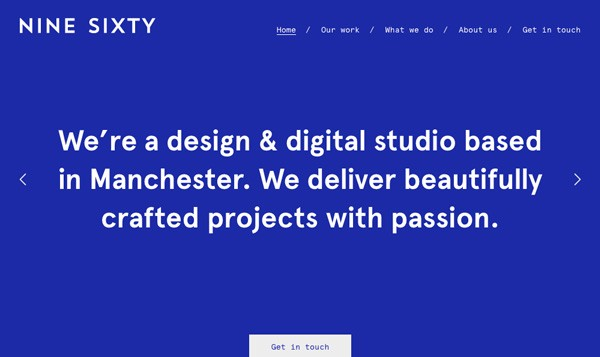
Video Backgrounds
Video backgrounds are the ultimate experience for conveying emotion and intent, and they are far more powerful than images. We found this trend rising rapidly in 2014, but its true peak will come in 2015.
BORN

Startup Framework
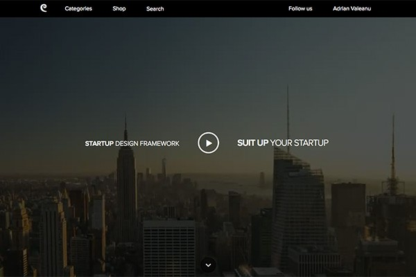
Unique Navigation Menus
Led by floating and sticky menus, we will witness more highly creative website navigation solutions. Scrolling down, scrolling up, popping out, image accents, secondary information, and animations all greatly contribute to an unforgettable browsing experience.
Impossible Bureau
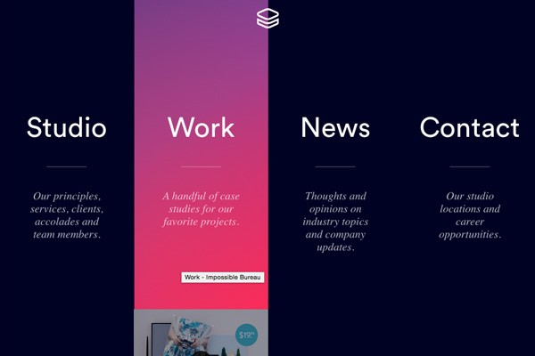
Qards
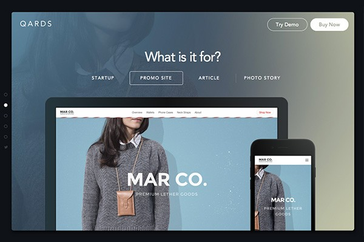
Cards and Tiles
Card or tile-based design will continue to maintain momentum in 2015. As Pinterest continues to lead this design trend, we will see more blogs and e-commerce websites using this design technique springing up like bamboo shoots after rain.
Firebox

Fixed Sections
We have become accustomed to sticky share bars and navigation menus. But in 2014, designers proved that other design elements such as sidebars can also be fixed and work well. In 2015, we will see more websites using fixed sections.
Build in Amsterdam
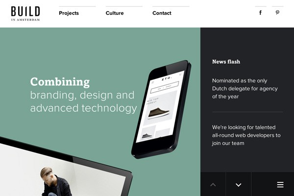
Subtle Parallax
One of the design trends that people both love and hate. Recently we have seen a large number of websites follow this trend. Unfortunately, from a user experience perspective, excessive parallax can ruin the design and disrupt the overall experience. In 2015, we will see more subtle parallax scrolling and animation effects adding a high-end and sophisticated feel to websites.
Cher Ami
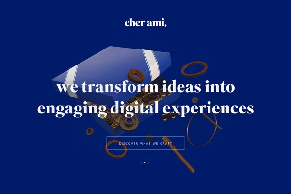
Extended Scrolling
In 2015, scrolling continues. According to "Everybody Scrolls" by Rebecca Gordon of Huge and other new research results, everyone loves scrolling. Digital storytelling cannot be separated from the consistent experience and easy-to-use flow brought by scrolling, so long single-page pages full of various interactions and transitions will dominate next year.
Smart Water
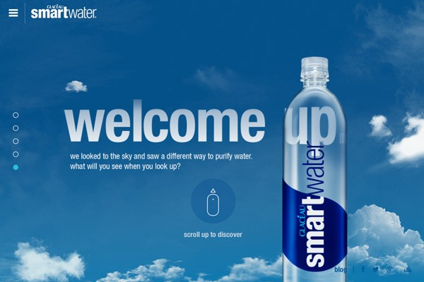
Illustration
We are all familiar with Dropbox, a landmark website that uses hand-drawn illustrations. Illustration has always been an important part of web design, but in the new year, we will see more wonderful illustrations integrated into website experiences to promote brands, tell stories, or connect with visitors.
One Design Company
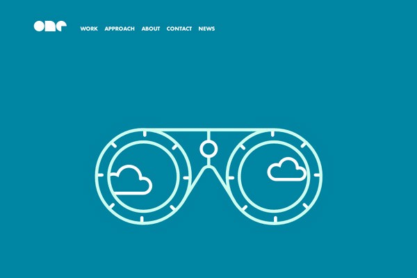
Big Data / Images
Big data is becoming increasingly important in the technology industry and in the field of web design. In 2015, we will witness more images, icons, and interactive data predictions. These contents may seem subtle, complex, and confusing, but they are also beautiful and attractive.
Personal Brand Institute
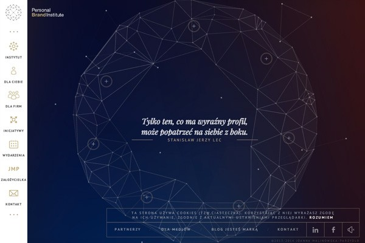
Product First
There are now many startups that produce actual products, but it is much harder to convey the experience and feel of a tangible product on a web page than it is to manufacture the product. But in the coming year, more interactive 3D experiences will emerge, allowing visitors to move the product and observe even the smallest corners.
My Deejo
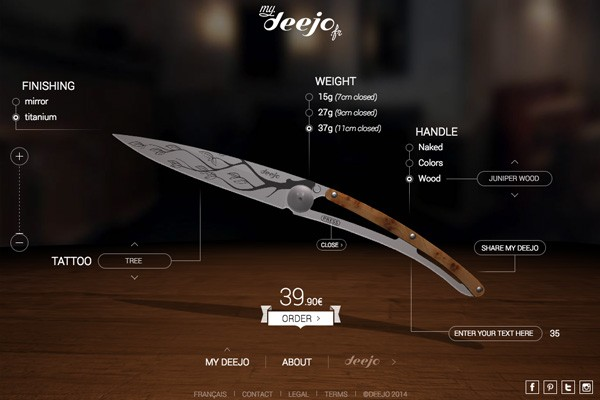
Flat Design Continues
With flat design being rapidly adopted by many large technology companies, many designers have now begun to turn to flat design without much thought. Although this trend is still relatively new, the new direction of flat design in 2015 is bound to emerge.
Pennies
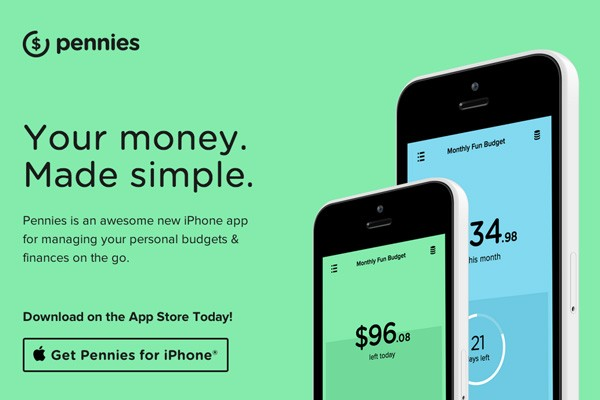
Mobile First
The number of mobile web users is growing rapidly, and the "mobile first" concept will also grow wildly in 2015. Responsive design is no longer just a feature; it has become a necessity. In order to provide the best experience for mobile users, designers must rethink the way they design websites.
Medium
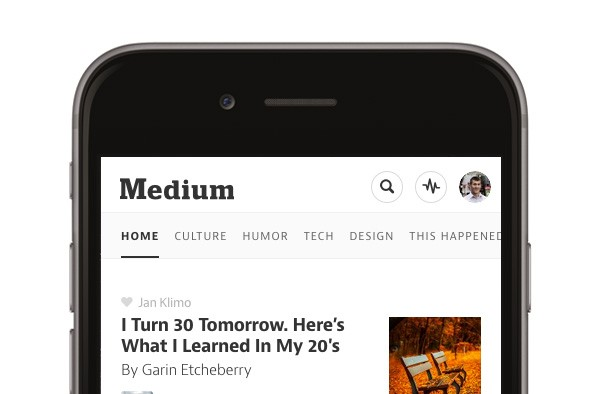
Human Touch
Hand-drawn illustrations and fonts have been around for some time. Nowadays, websites can support almost all kinds of fonts, and with this as a backing, designers have begun to make full use of handwritten fonts to convey a human touch in appearance and feel, thereby connecting with visitors in a new way.
Adventure
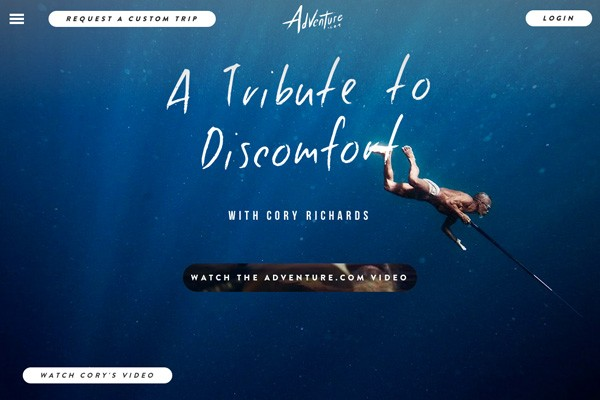
Micro Experiences
This refers to the micro copy and small details in design and interaction that can make users' eyes light up. Interesting images and expressions, hidden features, smart and humanized data, and so on. In the new year, we will see more clever things emerging in web design.
Virgin America
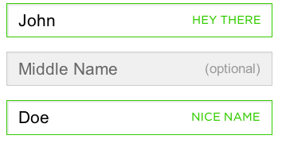
Virgin America: When entering your last name, it shows "Hello there," and when entering your first name, it shows "Nice name." Source:Little Big Details.
Geometry
Yes, it is the geometry from mathematics, but if used properly, geometry does not have to be as boring as mathematics. Beautiful geometric shapes and patterns will impact the web design stage even more fiercely in 2015.
Letters

Big and Bold Text
This year we saw a lot of giant headlines, and this trend will continue in 2015. The reason is simple: giant text is practical, effective, and can impress visitors. It seems that giant slogans are going to be popular for a while. Simple, direct, powerful, and effective.
Webflow
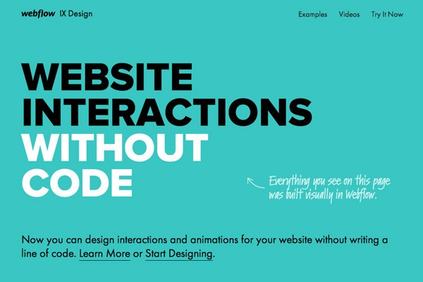
The Rise of Website Builders
In 2014, we witnessed website builders attempting to replace human designers and programmers, but with poor results. In 2015, we will also see more stunning, high-quality websites built with generators (such as Generator, Squarespace, Macaw, Webflow, and Froont).
Squarespace

Personal Branding
The importance of personal branding is becoming increasingly evident. Designers, engineers, bloggers, and entrepreneurs are all striving to build strong personal brands online to improve their credibility and visibility. Next, we will see more websites focused on individuals.
Tobias van Schneider
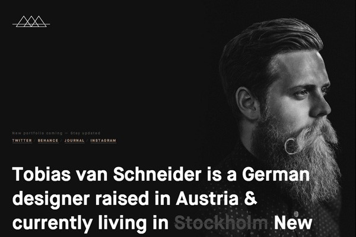
Material Design Continues to Develop
Material design was first invented by Google. It is a subtle revision of the flat design movement, but it is more refined, unified, and has more universality and promise than flat design. In 2015, we will definitely see a strong rise in the use of material design.
Inbox by Gmail
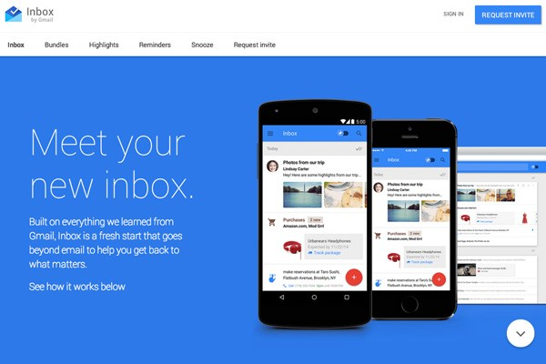
Interactive Journeys
Interactive digital experiences will gain more exposure. More and more interactive websites are creating unique and personalized experiences by using sound, connecting cameras and phones, and allowing interaction and storytelling based on the viewer's actions.
Echoes of Tsunami

Conclusion
Overall, current trends will continue to develop and evolve. Flat design, large typography, and high-quality images will continue to be the focus. At the same time, we are also looking forward to what new technologies and design trends that have fallen out of fashion will bring to the web design stage in 2015.
But in any case, new changes are absolutely guaranteed to appear, because change, in the field of design just as in people's lives, never stops.
Source: http://www.shejipai.cn/web-design-trends-2015.html